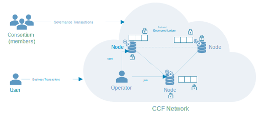

CCF Concepts¶
This page provides a broad overview of the key concepts and components of CCF.
The following diagram shows a CCF network made of 3 nodes, running the same application inside an enclave. The effects of user and member transactions are eventually committed to a replicated encrypted ledger. A consortium of members is in charge of governing the network.
Network and Nodes¶
A CCF network consists of several nodes, each running on top of a Trusted Execution Environment (TEE), or enclave, such as SGX. As such, a CCF network is decentralised and highly-available.
Nodes are run and maintained by operators. However, nodes must be trusted by the consortium of members before participating in a CCF network.
Application¶
Each node runs the same application (a.k.a. transaction engine). An application is a collection of endpoints that can be triggered by trusted users’ commands over TLS.
Each endpoint mutates an in-enclave-memory Key-Value Store that is replicated across all nodes in the network. Changes to the Key-Value Store must be agreed by a variable number of nodes, depending on the consensus algorithm selected (either Raft or PBFT), before being applied.
The Key-Value Store is a collection of maps (associating a key to a value) that are defined by the application. These maps can be private (encrypted in the ledger) or public (visible by anyone that has access to the ledger).
Note
Since all nodes in the CCF network can read the content of private maps, it is up to the application logic to control the access to such maps. Since every application endpoint has access to the identity of the user triggering it, it is easy to restrict which maps (and entries in those maps) a user can read or write to.
Ledger¶
All changes to the Key-Value Store are encrypted and recorded by each node of the network to disk to a decentralised ledger.
The integrity of the ledger is guaranteed by a Merkle tree whose root is periodically signed by the current primary/leader node.
Governance¶
A CCF network is governed by a consortium of members. The constitution, recorded in the ledger itself, defines a set of rules that members must follow.
Members can submit proposals to modify the state of the Key-Value Store. For example, members can vote to allow a new trusted user to issue requests to the application or to add a new member to the consortium.
Proposals are executed only when the conditions defined in the constitution are met (e.g. a majority of members have voted favourably for that proposal).